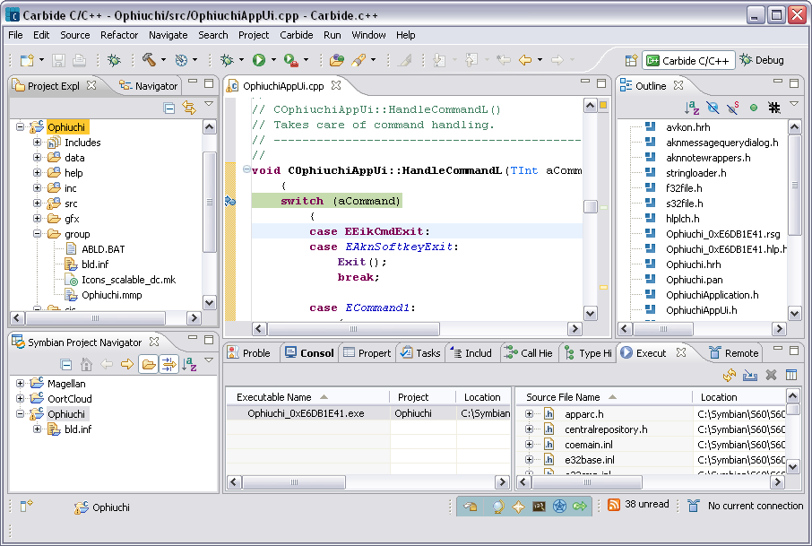

Carbide.c++ perspective
The  Carbide C/C++ perspective is a set of tools and layout of views provided for Symbian OS development. This perspective is designed to work with Symbian OS C++ projects. The commonly used views include:
Carbide C/C++ perspective is a set of tools and layout of views provided for Symbian OS development. This perspective is designed to work with Symbian OS C++ projects. The commonly used views include:
- Project Explorer view - displays C/C++ projects located in the current workspace
- Symbian Project Navigator view - shows all files that belong to the
current build configuration
- Editor view - one or more source code editor windows
- Carbide Portals editor - provides Carbide news, release information, additional extensions, and support options
- Outline view - displays an outline of a structured C/C++ file that is currently open in the editor view
- Problems view - displays build errors
- Console view - shows the output of a process and allows you to provide keyboard input to a
process
- Executables view - provides a dynamic list of executables and their related source files
- Remote Connections view – use to monitor, create, edit, or remove common connection settings

Figure 1 - Carbide C/C++ perspective
NOTE Click the  icon to show additional options that may not be visible in the perspective view.
icon to show additional options that may not be visible in the perspective view.
For more information on perspectives see Workbench User Guide > Concepts > Perspectives, and for views see C/C++ Development User Guide > Reference
> C/C++ Views and Editors.
For more details on the Symbian OS Build Configurations, see
Active Configurations.
Related references